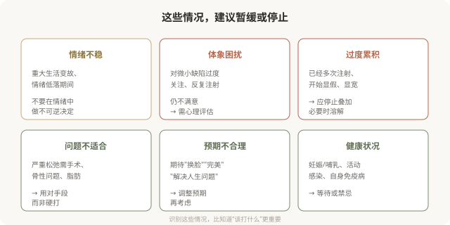

先说结论：注射有明确的边界——有些情况应该暂缓，有些情况应该停止，有些情况从一开始就不该开始。心理预期不稳、存在体象障碍倾向、已经过度累积、问题根本不适合注射时，“停止”或“不做”比继续更明智。能识别这些边界、并愿意说“不”的医生和消费者，比永远“再加一点”的更值得信任。这是这个系列的收尾，因为“会停”是注射艺术里最难、也最重要的一课。
哪些情况应该暂缓或停止

体象障碍：需要心理支持而非更多注射
如果发现自己符合以下特征，需要的不是更多注射，而是专业心理评估：
- 对外貌的某个细节过度关注，花费大量时间反复审视。
- 反复注射仍不满意，总觉得“还差一点”。
- 因外貌问题显著影响社交、工作、亲密关系。
- 对他人未注意到的“缺陷”极度困扰。
体象障碍（body dysmorphic disorder）是一种需要专业治疗的心理状况，注射无法解决其根本困扰，反而可能加重。这不是道德判断，而是说：在这种情况下，心理支持比注射更有帮助。
“过度累积”的停止
当你已经多次注射，开始出现以下信号时，应该停止叠加，必要时溶解：
- 脸开始显宽、显肿、显假。
- 别人能看出“做过”。
- 每次照镜子都觉得“还需要调整”。
- 累计剂量已经不小，但仍不满足。
这时候的智慧不是“再修一修”，而是停下来、必要时溶解部分材料、重新审视。继续叠加只会让情况更糟。
“问题不适合”的诚实
有些问题根本不适合注射，用注射硬处理只会效果差、风险高：
- 严重皮肤松弛：需要手术（拉皮等），注射撑不起松弛。
- 骨性轮廓问题：需要手术（如下颌角成形），注射只是临时掩盖。
- 脂肪堆积：需要减脂或吸脂，注射解决不了。
- 静态深纹伴结构改变：可能需要填充联合其他手段。
一个好的医生会告诉你“这个问题注射解决不了”，而不是“打一针试试”。这种诚实，恰恰是专业和负责的体现。
“会停”的医生最值得信任
在注射领域，愿意说“不”的医生比永远说“好”的医生更值得信任。一个对所有诉求都点头、对所有风险都轻描淡写、从不劝阻的医生，并不代表技术好，更可能意味着他对你这次注射（以及你的长期走向）没有真正在意。
一个负责任的医生会在以下时刻说“不”：
- 你的诉求超出注射能力。
- 你已经过度，需要停止而非加码。
- 你的预期不合理，需要调整而非满足。
- 你的状况（心理、健康）不适合注射。
遇到这样愿意说“不”的医生，请珍惜——他在保护你。
给这个系列的读者
这 30 篇的核心目的，是帮助你建立对美容注射的现实认知：
- 注射是医疗操作，不是“轻医美”那么轻。
- 它有效，但也有明确的能力边界和风险。
- 它的安全建立在资质、解剖、材料和知情之上。
- 它的满意与否，很大程度上取决于预期是否合理、节奏是否可控。
- “会停”比“会打”更难，也更重要。
如果你正在考虑注射，希望这套内容能帮你：
- 分清填充、肉毒、再生的不同。
- 学会核实机构和医生的资质。
- 在面诊中提出正确的问题。
- 建立与风险匹配的心理预期。
- 在出现问题时知道该怎么做。
- 识别什么时候应该停止或暂缓。
最成熟的注射决策，往往不是“打了最贵最好”，而是“在充分了解后，做出了符合自己情况和承受力的选择”——包括有时候，选择不打。
注射的艺术，归根结底是克制与理解的艺术：理解自己的诉求和边界，克制对完美的执念，选择专业的人，在合适的时候做合适的事，并知道何时该停下。这比任何一支材料、任何一项技术都更能保护你的长期美与安全。
本文用于健康教育，不能替代面诊、个体化评估和必要的心理支持。